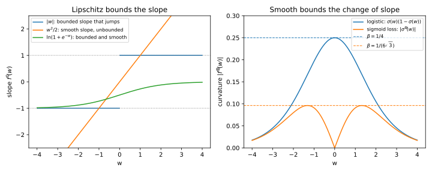
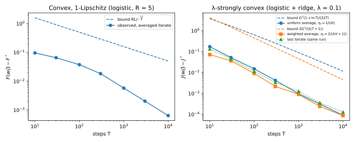
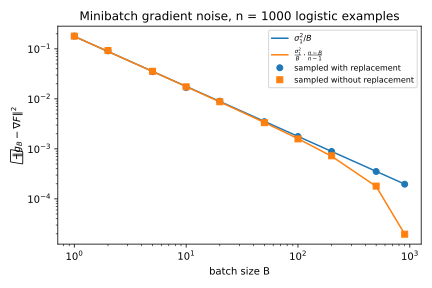
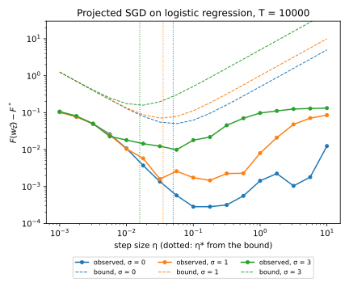
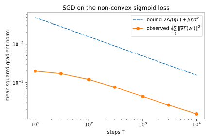
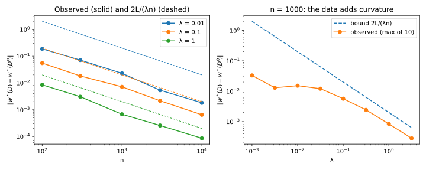

6 Optimization
6.1 Why this matters
Training a model means finding the parameters that make its average loss over the training set as small as possible. Two questions come up every time you do it. The first is how fast the optimizer gets there. Gradient descent (GD) and stochastic gradient descent (SGD) do almost all of this work in machine learning. You want to know how many steps they need, how to pick the step size, and what it costs you that SGD works with noisy gradients.
The second question is how much the answer depends on any one training example. If you replace one example and train again, does the best model barely move, or can it jump somewhere else entirely? The first question is about the algorithm. The second is about the problem itself, and the next chapter uses its answer to explain when a model generalizes.
Both questions have the same kind of answer, because a few constants decide everything. Three of them describe the loss. The first is how steep the loss can be anywhere. The second is how fast its slope can change, which bounds its curvature from above. The third is how much the loss curves upward at least, which bounds its curvature from below. The fourth constant belongs to the optimizer. It measures how far the random gradients of SGD scatter around the true gradient. Every rate and every bound in this chapter combines these four constants. Once you know which ones a result uses, you can tell whether it applies to your model.
6.2 Convexity, Lipschitz continuity and smoothness
Throughout the chapter, the training set has \(n\) examples, and the model is a vector of parameters \(w\). Write \(\ell(w, z)\) for the loss of the model on an example \(z\). The empirical risk \(F(w)\) is the average of these losses over the training set, and it is what training minimizes. A minimizer is a point where the empirical risk is smallest. This chapter writes it \(w^*\), and writes \(F^*\) for the smallest value.
The gradient of the risk at a point, written \(\nabla F(w)\), points in the direction in which the risk increases fastest. Its length says how steep the risk is there. To say how fast an optimizer that follows the gradient reaches the minimizer, you need assumptions on the loss. Four properties are enough for the whole chapter. Two of them bound a derivative from above, and two bound the curvature from below. Mixing them up is the most common mistake in reading optimization results.
A function is convex when it curves upward everywhere, with no dents. The tangent at a point predicts the value elsewhere by following the slope in a straight line. Convexity says that this prediction never overshoots, so the graph lies above every one of its tangents. For example, the tangent of \(w^2\) at the point 1 has slope 2. At the point 3 it predicts the value 5, and the function is 9, above it.
This picture is what makes convex problems easy to optimize. A gradient is something you can compute, and convexity turns it into a guarantee about the minimizer. Apply the tangent picture at your current point and look at the minimizer. The gradient then points away from the minimizer, and its component along that direction is at least your current error, the gap between the risk and its smallest value. So a step against the gradient makes progress in proportion to how far from optimal you are.
A function is \(L\)-Lipschitz, for a constant \(L\), when it never changes faster than \(L\) per unit of distance. For a differentiable function this is the same as saying that the gradient never has length more than \(L\). The constant bounds how steep the function can be.
A function is \(\beta\)-smooth, for a constant \(\beta\), when its gradient changes by at most \(\beta\) per unit of distance. Because the slope cannot change quickly, the tangent stays a good prediction nearby. Its error grows at most like a parabola with curvature \(\beta\). This is the descent lemma: \[f(w') \le f(w) + \langle\nabla f(w), w' - w\rangle + \frac\beta2\|w' - w\|^2. \tag{6.1}\] Here \(f\) is the function, \(w\) is the point where you take the tangent, and \(w'\) is another point. The first two terms on the right are the tangent’s prediction. The last term is the parabola that bounds its error. Convexity says the tangent is a lower bound on the function, and smoothness says the tangent plus this parabola is an upper bound.
A function is \(\lambda\)-strongly convex, for a constant \(\lambda > 0\), when it lies above each tangent by at least a bowl of curvature \(\lambda\). This is convexity with a margin that grows with the distance from the tangent point. An equivalent form says that the slope grows by at least \(\lambda\) per unit of distance as you move away from any point. Two consequences matter later. First, at the minimizer the gradient is zero, and it grows at least in proportion to the distance from there. So a point where the gradient is small must be close to the minimizer, within the gradient’s length divided by \(\lambda\). In particular, a strongly convex function has only one minimizer.
The second consequence is how strong convexity arises in practice. Adding the ridge term \(\frac\lambda2\|w\|^2\) to a convex function makes it \(\lambda\)-strongly convex. The ridge term is a bowl of curvature exactly \(\lambda\) in every direction. Adding it to a function that already curves upward adds that curvature everywhere.
For a function with second derivatives, all four properties can be read off the matrix of second derivatives, the Hessian. Its eigenvalues are the curvatures of the function along its principal directions. Convex means that no eigenvalue is negative, so no direction curves down. Strongly convex means that every eigenvalue is at least \(\lambda\). Smooth means that every eigenvalue lies between \(-\beta\) and \(\beta\). The ratio of the largest to the smallest curvature is the condition number \(\kappa = \beta/\lambda\). It measures how much more steeply the function rises in its steepest direction than in its flattest one.
Lipschitz and smooth bound different derivatives, so neither implies the other (Figure 6.1). The absolute value \(|w|\) is 1-Lipschitz, because its slope is always \(-1\) or \(+1\). But it is not smooth for any \(\beta\), because the slope jumps from \(-1\) to \(+1\) at zero. The parabola \(w^2/2\) is the opposite. Its slope is \(w\) itself, which changes at rate 1, so it is 1-smooth. But its slope grows without bound, so it is not Lipschitz.
The parabola is a special case of a general fact. A strongly convex function is never Lipschitz on the whole space, because its slope grows at least in proportion to the distance from the minimizer. That is why every result for strongly convex losses below works on a bounded set, such as a ball, where the slope stays bounded.
The two constants also do different jobs. The Lipschitz constant \(L\) bounds how large the gradient of one step can be. It governs SGD on losses that are not smooth, and how far one example can move the minimizer. The smoothness constant \(\beta\) bounds how far you can trust the tangent. It sets the largest safe step size, \(1/\beta\), and it carries the analysis of non-convex losses.

Logistic regression has both properties, and checking them shows how the constants are found in practice. You compute the gradient and bound its length, then compute the Hessian and bound its eigenvalues. Take a label \(y\) that is \(-1\) or \(+1\), and features \(x\) scaled so that \(\|x\| \le 1\). The margin \(m = y\langle w, x\rangle\) is positive when the model classifies the example correctly, and large when it does so confidently. The logistic loss is \(\ln(1 + e^{-m})\). It is close to 0 for a large positive margin and grows linearly for a large negative one.
The gradient of the logistic loss is the feature vector times a probability, the sigmoid of the negative margin. A probability is below 1 and the features have length at most 1, so the loss is 1-Lipschitz. The Hessian is the matrix \(xx^\top\) times a factor \(p(1-p)\), where \(p\) is the sigmoid of the margin. That factor is at most \(\frac14\), and the matrix has eigenvalue \(\|x\|^2 \le 1\) along the features and zero across them. So the loss is convex and \(\frac14\)-smooth.
The logistic loss is not strongly convex. It has no curvature at all in directions across the features. Even along them, the factor \(p(1-p)\) vanishes for a confidently classified example. For the example \(x = (0.6, 0.8)\) with label \(+1\), at the parameters zero the margin is 0. There the loss is \(0.6931\) and the gradient has length \(0.5000\). The curvature takes its largest value, \(0.2500\). At the parameters \((3, 4)\) the margin is 5, and the loss, gradient length and curvature are all tiny, at \(0.0067\), \(0.0067\) and \(0.0066\).
So confidently classified examples contribute almost no curvature. At a good solution, where most examples are classified confidently, the empirical risk is only weakly curved. On the logistic dataset this chapter uses in its experiments, with 1,000 examples in 5 dimensions, the smallest curvature at the minimizer is \(0.0233\). Adding a ridge term makes the loss \(\lambda\)-strongly convex and \((\frac14 + \lambda)\)-smooth. But its gradient now grows with the parameters, so it is Lipschitz only on a ball. On the ball of radius \(R\) its gradient is at most \(1 + \lambda R\).
The squared loss of least squares, \(\frac12(\langle w, x\rangle - y)^2\), behaves differently. Its gradient is the prediction error times the features, and its Hessian is again \(xx^\top\). So it is convex and \(\|x\|^2\)-smooth. It is not Lipschitz, because the prediction error grows linearly in the parameters. On a ball of radius \(R\), with features of length at most 1 and labels at most \(Y\) in size, it is \((R + Y)\)-Lipschitz.
For least squares, the empirical risk has the same Hessian everywhere, the average of the matrices \(x_ix_i^\top\) over the training set. The risk is strongly convex exactly when this matrix is invertible, with \(\lambda\) its smallest eigenvalue. When there are more features than examples, the examples cannot span every direction. The risk is then flat along the missing directions, and it has a whole space of minimizers. Ridge regression adds the curvature \(\lambda\) in every direction. The risk is then strongly convex for any data, with a unique minimizer, \(w^* = (X^\top X + n\lambda I)^{-1}X^\top y\). Here the matrix \(X\) holds the feature vectors as its rows, and the vector \(y\) holds the labels.
6.3 Gradient descent and SGD
Gradient descent takes a step against the full gradient of the risk, \(w_{t+1} = w_t - \eta\nabla F(w_t)\). Here \(w_t\) is the parameter vector after \(t\) steps, and the step size \(\eta\) is a positive number you choose. On a training set of a million examples, one step costs a million gradient evaluations.
SGD replaces the full gradient with the gradient of one example chosen uniformly at random. Each step is then cheap. With a minibatch, it uses the average gradient over a small random batch of examples instead. Either way, the random gradient is unbiased, meaning that averaged over the random choice it equals the true gradient. Uniform sampling is what makes this hold. A sampling scheme that favoured some examples would give them more weight, and SGD would then minimize a reweighted risk instead.
Being right on average does not make the random gradient as good as the true one. The average squared length of the random gradient is the squared length of the true gradient plus a variance, the average squared error of the estimate. This is the bias–variance split. It holds because the error of the estimate averages to zero, so its cross term with the true gradient averages to zero too. Only the two squared terms remain.
A small example makes the split concrete. Take three one-dimensional examples, 1, 2 and 6, and the loss \(\frac12(w - z)^2\), where \(z\) is the example. The risk is the average of the three losses. Its gradient is \(w - 3\), because the mean of the data is 3. At the point \(w = 4\) the true gradient is 1. SGD picks one example at random and uses its gradient \(w - z\), which takes the three values in Table 6.1.
| Example picked | \(z_1 = 1\) | \(z_2 = 2\) | \(z_3 = 6\) | Average |
|---|---|---|---|---|
| Gradient \(g = w - z_i\) | 3 | 2 | −2 | 1 |
| \(g^2\) | 9 | 4 | 4 | 17/3 |
| \((g - \nabla F)^2\) | 4 | 1 | 9 | 14/3 |
The random gradient is right on average, since the three values average to 1. Its average square is \(17/3\), which splits into the squared true gradient, 1, plus the variance, \(14/3\). Averaging removed the error from the gradient itself but not from its square. Every SGD rate in this chapter pays for that variance.
Before adding noise, look at what a fast rate looks like without it. Take a quadratic risk whose curvatures all lie between \(\lambda\) and \(\beta\). On a quadratic, the gradient is a linear function of the error, the distance from the minimizer. So each GD step multiplies the error by a fixed matrix. With the step \(1/\beta\), the error along a direction of curvature \(h\) shrinks by the factor \(1 - h/\beta\) at each step. The steepest direction is fixed in one step. The flattest direction shrinks slowest, by the factor \(1 - 1/\kappa\), where \(\kappa\) is the condition number. So the distance to the minimizer shrinks at least geometrically: \[\|w_t - w^*\| \le \left(1 - \frac1\kappa\right)^t\|w_0 - w^*\|. \tag{6.2}\]
This is called linear convergence, because the error shrinks by a constant factor per step. Reaching an accuracy \(\epsilon\) takes about \(\kappa\ln(1/\epsilon)\) steps. So a large condition number is what makes GD slow. The step must be small enough for the steepest direction, or GD overshoots there and diverges. With that small step, the flattest direction moves only a fraction \(1/\kappa\) of the way at each step.
The full edition’s script tests this on a two-dimensional least-squares problem with 200 examples. One feature varies much less than the other, so the condition number is \(9.58\). The bound Equation 6.2 says that GD needs at most 126 steps to shrink the error by a factor of a million. GD actually takes 122 steps. The bound is nearly exact here, because the starting error lies largely along the flat direction. That part of the error shrinks at exactly the worst-case rate.
Figure 6.2 shows the two algorithms on such a problem. GD first removes the error along the steep direction, then crawls along the flat valley. SGD with a constant step follows roughly the same route but keeps jittering around the minimizer.

A weaker statement holds for every \(\beta\)-smooth risk, convex or not, and the non-convex analysis below starts from it. Each GD step with the step size \(1/\beta\) lowers the risk by at least \(\|\nabla F\|^2/(2\beta)\). The reason is the descent lemma Equation 6.1. The tangent term of the step promises a decrease of \(\|\nabla F\|^2/\beta\). The parabola term charges for overshooting, and it takes back half of that. Half the progress is left.
SGD cannot converge like this with a constant step. Near the minimizer the true gradient vanishes, but the gradients of single examples do not. In Table 6.1, even at the minimizer 3, the three examples give the gradients 2, 1 and −3. So the iterates keep jumping around the minimizer, at a distance set by the step size and the variance. Two things make SGD converge anyway. Averaging the iterates cancels the jumps, and shrinking the step over time makes them smaller. Both give slower rates than GD’s, and the next sections give them.
6.4 SGD for convex Lipschitz objectives
The cleanest guarantee for SGD needs only convexity and bounded gradients, with no smoothness. It therefore covers losses with kinks, such as the hinge loss and the absolute loss, as well as the logistic loss. At a kink, SGD uses a subgradient, any slope whose straight line stays below the graph. At the kink of \(|w|\), any slope between \(-1\) and \(+1\) qualifies.
The guarantee runs projected SGD. It keeps the parameters inside a set, such as a ball, and pulls any step that leaves the set back to the nearest point of it. This pull-back is called a projection. For the ball of radius \(R\), it shrinks a point that left the ball back onto its surface. Projection never moves a point farther from anything inside the set. That needs the set to be convex, so that the segment between two of its points stays inside. Projection therefore never undoes progress towards a minimizer that lies in the set. If the minimizer lies outside the set, this argument fails, because pulling back can move you away from it.
The guarantee also returns the averaged iterate, the average of the parameter vectors over the whole run, rather than the last one. Here is the setting. The risk is convex, and the set contains the minimizer. The start is within a distance \(R\) of the minimizer. The random gradients have an average squared length of at most \(G^2\), so \(G\) is the typical size of a gradient used. After \(T\) steps with a constant step size \(\eta\), the averaged iterate \(\bar w_T\) satisfies \[\mathbb E[F(\bar w_T)] - F^* \le \frac{R^2}{2\eta T} + \frac{\eta G^2}{2}. \tag{6.3}\] The left side is the expected error, the gap between the risk of the averaged iterate and its smallest value.
The two terms pull the step size in opposite directions. The first is the cost of travel. You start a distance \(R\) from the minimizer, and small steps take a long time to get there. The second is the cost of noise. Each step overshoots by an amount that grows with the step size and with the size of the random gradients. The step \(\eta = R/(G\sqrt T)\) balances the two, and the bound then becomes \(RG/\sqrt T\). A longer run makes travel cheaper, so it allows smaller steps and less jitter. That is why the best step shrinks like \(1/\sqrt T\). For an \(L\)-Lipschitz loss, every single-example gradient has length at most \(L\), so \(G = L\) and the bound is \(RL/\sqrt T\).
The reason the bound holds is easiest to follow through the squared distance to the minimizer. One step changes that distance by two terms. The first is a cross term between the step and the direction to the minimizer, and it shrinks the distance. Because the random gradient is unbiased, this term behaves on average as if the step used the true gradient. Convexity then says it is at least the current error, as the tangent picture showed. The second is the squared length of the step, which grows the distance. It is at most \(\eta^2G^2\) on average.
So each step’s error is at most the decrease in squared distance plus a noise term. Summed over the run, the decreases cancel in a chain, and their total is at most the starting squared distance \(R^2\). That bounds the average error over the run. The average error is not the error of any model you could hand to someone. Convexity fixes this too. The value of a convex function at an average of points is at most the average of its values there (Jensen’s inequality). So the averaged iterate’s error is at most the average error.
Both uses of convexity matter, and so does the choice of output. The bound holds for the averaged iterate, not for the last one. If you return the last iterate, the bound no longer applies, so average the iterates. The rate \(1/\sqrt T\) also cannot be improved for this class of losses. There are convex Lipschitz functions on which every method that only queries gradients has error of order \(RL/\sqrt T\) after \(T\) queries (Bubeck 2015). Smoothness alone does not help SGD either. It reduces the overshoot of the true gradient, but not the noise term, which comes from the randomness of the gradient.
The bound is a worst case. Real losses often have curvature near the minimizer, which the bound does not use. The full edition’s script tests it on logistic regression with 1,000 examples in 5 dimensions. Projected SGD runs on the ball of radius 5 from the starting point zero, and the minimizer has length \(3.152\). So the minimizer is inside the ball and the start is within \(R = 5\) of it. The loss is 1-Lipschitz, and the step is \(R/\sqrt T\), which is \(0.5\) at \(T = 100\). Table 6.2 shows the results, averaged over 20 runs.
| Steps \(T\) | Step \(\eta\) | Observed \(F(\bar w_T) - F^*\) | Bound \(RL/\sqrt T\) |
|---|---|---|---|
| 100 | 0.5000 | \(4.44\times10^{-2}\) | 0.500 |
| 1,000 | 0.1581 | \(6.46\times10^{-3}\) | 0.158 |
| 10,000 | 0.0500 | \(7.71\times10^{-4}\) | 0.050 |
The bound holds in every row. It is loose by a factor of 11 at 100 steps, and by a factor of 65 at 10,000 steps. The gap grows because the observed error falls faster than \(1/\sqrt T\). Over a hundredfold increase in the number of steps, the error falls by a factor of \(57.6\). That is much closer to the factor 100 of a \(1/T\) rate than to the factor 10 of a \(1/\sqrt T\) rate. The reason is that this risk is strongly convex near its minimizer, with smallest curvature \(0.0233\) there, and the bound does not know it. The left panel of Figure 6.3 shows the same comparison over a range of run lengths.

6.5 Strongly convex objectives
Regularized models are strongly convex, and strong convexity pulls the iterates towards the minimizer at every step. The farther you are from it, the larger the gradient pointing back. That turns the \(1/\sqrt T\) rate into a \(1/T\) rate, provided that the step sizes and the average match the curvature. Two schemes work. Both let the step size shrink like \(1/(\lambda t)\) at step \(t\), which is the right size once strong convexity pulls the iterates in. They differ in how they average the run.
The setting is the same as before, except that the risk is now \(\lambda\)-strongly convex on the set. The first scheme uses the steps \(1/(\lambda t)\) and the uniform average of the iterates. After \(T\) steps its expected error is at most \[\frac{G^2(1 + \ln T)}{2\lambda T}. \tag{6.4}\] The second scheme uses the steps \(2/(\lambda(t + 1))\) and an average in which iterate \(t\) has a weight proportional to \(t\). This weighted average removes the \(\ln T\). Its expected error is at most \[\frac{2G^2}{\lambda(T + 1)}. \tag{6.5}\]
The reason is the convex argument with one improvement. Strong convexity adds a distance term to the progress each step makes, since the risk lies above its tangent by a bowl. With steps of size \(1/(\lambda t)\), this extra term cancels the distance terms in the chain completely. The starting distance ends up multiplied by zero, so the \(R^2\) of the convex bound disappears. What is left is the noise. Step \(t\) adds a noise term of size \(G^2/(2\lambda t)\). Summed over the run, these terms give a harmonic sum, which is at most \(1 + \ln T\).
The harmonic sum is where the \(\ln T\) comes from. The early iterates are taken with huge steps, so they are bad, and the uniform average gives them full weight. The weighted average gives later, better iterates more weight. With the matching step sizes, its noise term is the same at every step, so no harmonic sum appears. Averaging only the last half of the iterates gives the same \(1/(\lambda T)\) rate, by dropping the bad early ones in another way. The weighted scheme is due to Lacoste-Julien, Schmidt and Bach (2012), and the last-half average to Rakhlin, Shamir and Sridharan (2012).
The rate is now \(1/T\) instead of \(1/\sqrt T\). To halve the error you need twice the steps, not four times. Strong convexity buys this, and it costs a factor \(1/\lambda\) in the bound. So a weak regularizer gives a fast rate only after many steps.
The schedule also depends on knowing \(\lambda\). If you set the steps with a \(\lambda\) larger than the true strong convexity, the argument claims more pull towards the minimizer than there is. The steps then shrink too fast, and the iterates can stall far from the minimizer.
The constant \(G\) depends on the set. A strongly convex function has no bound on its gradient over the whole space, as the previous section showed. So the guarantee needs a bounded set, and that is the reason for the projection. For a loss that is \(L\)-Lipschitz plus a ridge term, the gradient on the ball of radius \(R\) has length at most \(L + \lambda R\).
On the logistic data with a ridge term of \(\lambda = 0.1\), the minimizer has length \(0.839\), inside the ball of radius 5. The gradient bound is \(G = 1 + 0.1 \times 5 = 1.5\). After 10,000 steps, averaged over 20 runs, the uniform average has error \(9.09\times10^{-5}\), against its bound of \(1.15\times10^{-2}\). The weighted average has error \(7.85\times10^{-5}\), against its bound of \(4.50\times10^{-3}\). The bounds hold but are loose, by factors of about 130 and 60. The main reason is that \(G = 1.5\) is the worst case over the whole ball, while the actual gradients near the minimizer are much smaller. In the right panel of Figure 6.3, the uniform average, the weighted average and the last iterate all fall like \(1/T\). The weighted average is slightly ahead.
6.6 Gradient noise and minibatches
Every SGD bound so far pays for the average squared length of the random gradients. By the bias–variance split, that is the squared true gradient plus the variance of the estimate. Variance comes from sampling examples. It also comes from computing gradients in low precision, or from compressing them to send between machines. In later parts, noise is sometimes added to gradients on purpose. This section answers two practical questions. How does the batch size change the variance, and how should the step size change when the gradients get noisier?
Write \(\sigma_1^2\) for the variance of a single-example gradient at a point. It is the average squared distance of the \(n\) per-example gradients from their mean, the true gradient. Averaging \(B\) independent random gradients divides their variance by \(B\), as for any sample mean. The variances of independent draws add up, so the sum of \(B\) gradients has variance \(B\sigma_1^2\). Dividing the sum by \(B\) divides its variance by \(B^2\).
Drawing the batch without replacement does a little better still. The deviations of the per-example gradients from their mean sum to zero. So once you have drawn an example that deviates one way, the examples left over deviate, on average, slightly the other way. The draws partly cancel. The variance of the batch average is \[\mathbb E\|g_B - \nabla F(w)\|^2 = \begin{cases}\dfrac{\sigma_1^2}{B} & \text{with replacement,}\\[2ex] \dfrac{\sigma_1^2}{B}\cdot\dfrac{n - B}{n - 1} & \text{without replacement,}\end{cases} \tag{6.6}\] where \(g_B\) is the average gradient over the batch. The extra factor is 1 for a batch of one example. It is 0 for a batch of the whole dataset, whose gradient is exact.
The three examples of Table 6.1 show the gain. Their single-example variance is \(14/3\). There are three batches of two different examples, and the variance of their average gradients is \(7/6\). With replacement it would be \(7/3\), twice as large. On the logistic data, with 1,000 examples, the single-example variance at the minimizer is \(0.1722\). The formula matches 4,000 random batches of each size to within the simulation error. At a batch of 500, half the dataset, the extra factor is about one half. So sampling without replacement halves the variance there (Figure 6.4).

Larger batches are not free. A batch of \(B\) examples costs \(B\) gradient evaluations and divides the variance by \(B\). Per gradient evaluation, the reduction in variance is exactly cancelled by the cost. Batches help mainly because the \(B\) evaluations can run in parallel.
Now suppose that each random gradient gets extra noise of mean zero, independent of everything else. Write \(\sigma^2\) for the average squared length of that noise. Because the noise is independent and averages to zero, its cross term with the gradient averages to zero. So the noise adds \(\sigma^2\) to the average squared length of the gradient, and changes nothing else. The convex Lipschitz bound Equation 6.3 then holds with \(G^2 = L^2 + \sigma^2\). Its best step size and its value at that step follow as before: \[\eta^* = \frac{R}{\sqrt{(L^2 + \sigma^2)T}}, \qquad \mathbb E[F(\bar w_T)] - F^* \le \frac{R\sqrt{L^2 + \sigma^2}}{\sqrt T}. \tag{6.7}\]
Noise shrinks the best step, so noisier gradients call for smaller steps and longer runs. To reach a fixed accuracy, the number of steps must grow in proportion to \(L^2 + \sigma^2\). Noise therefore multiplies the number of steps needed by \(1 + \sigma^2/L^2\). Noise of size \(\sigma = 3L\) multiplies it by 10.
The full edition’s script tests this on the logistic problem. It adds normal noise to every single-example gradient and runs projected SGD for 10,000 steps, with 10 runs per setting. It sweeps the step size over 17 values from \(10^{-3}\) to 10. With \(R = 5\) and \(L = 1\), the bound’s step is \(0.05\) without noise. Table 6.3 compares that step with the best one on the grid.
| Noise \(\sigma\) | \(\eta^*\) from the bound | Bound at \(\eta^*\) | Observed at \(\eta^*\) | Best \(\eta\) on the grid | Observed there |
|---|---|---|---|---|---|
| 0 | 0.0500 | 0.050 | \(4.99\times10^{-4}\) | 0.178 | \(1.85\times10^{-4}\) |
| 1 | 0.0354 | 0.071 | \(1.58\times10^{-3}\) | 0.056 | \(1.38\times10^{-3}\) |
| 3 | 0.0158 | 0.158 | \(9.58\times10^{-3}\) | 0.056 | \(5.10\times10^{-3}\) |
Table 6.3 and Figure 6.5 show three things. First, noise costs accuracy. At the bound’s step, the error grows about 20-fold from no noise to noise of size 3. Second, noise pushes the best step down, from \(0.178\) to \(0.056\) on the grid. So retune the step size whenever the gradient noise changes. Third, the bound’s step is conservative. It assumes that the gradient is as large as \(L\) and the distance as large as \(R\) throughout. The actual run has smaller gradients and starts closer, so the best observed step is larger, by a factor of \(3.6\) without noise.

6.7 Non-convex objectives: convergence to stationary points
The losses of neural networks are not convex. They can have many local minima and saddle points, and no method that only uses gradients can promise to find the global minimum. What you can still guarantee is that SGD finds a point where the gradient is small, an approximate stationary point. The argument replaces convexity with smoothness.
The idea is that each step lowers the risk in proportion to the squared gradient, minus a penalty for the noise. This is the descent lemma again, as for GD. The risk cannot fall forever, because it is bounded below. So the total of the squared gradients over the run is bounded, and they must be small on average.
Each piece of this argument is a condition of the result. The risk must be \(\beta\)-smooth, or the descent lemma does not hold and a step can raise the risk. The risk must be bounded below, or it could fall forever with large gradients. Write \(\Delta\) for the most it can fall from the starting point. The random gradients must be unbiased, with variance at most \(\sigma^2\). And the step size must be at most \(1/\beta\). A larger step overshoots by more than the progress it makes, and then the step can raise the risk.
Under these conditions, SGD with a constant step size \(\eta\) and no projection satisfies \[\frac1T\sum_{t=1}^T\mathbb E\|\nabla F(w_t)\|^2 \le \frac{2\Delta}{\eta T} + \beta\eta\sigma^2. \tag{6.8}\] The left side is the average squared gradient over the run. The smallest squared gradient is at most this average. Ghadimi and Lan (2013), who proved this bound, return an iterate chosen at random from the run, so that its expected squared gradient equals the average.
As in the convex case, the first term is the cost of travel and the second the cost of noise. The step \(\sqrt{2\Delta/(\beta\sigma^2T)}\) balances them, unless it would exceed \(1/\beta\). With the smaller of the two steps, the bound is at most \(4\beta\Delta/T + 2\sqrt{2\beta\Delta\sigma^2/T}\).
There are two regimes. Without noise the second term vanishes, the step is \(1/\beta\), and the rate is of order \(1/T\), as for GD. With noise, the square-root term dominates for long runs. The squared gradient then falls like \(1/\sqrt T\), so the gradient’s length falls only like \(T^{-1/4}\). With batches of \(B\) examples, replace the variance by \(\sigma^2/B\), as Equation 6.6 says.
A small gradient is all you get. A stationary point can be a local minimum, a saddle point, or a flat region far from anything good. The guarantee says nothing about how far the risk is from its smallest value. The convex bounds could say that, because convexity links the gradient to the error. Without convexity, that link is gone.
The full edition tests the bound on the sigmoid loss, the sigmoid of the negative margin. It is a smooth stand-in for counting mistakes, close to 1 for a badly misclassified example and close to 0 for a confidently correct one. It is not convex, because the sigmoid curves up on one side of zero and down on the other. To apply the bound you need its constants, and each one comes from bounding a derivative. Its curvature is at most \(1/(6\sqrt3) = 0.0962\), which is its smoothness constant \(\beta\) (Figure 6.1, right).
The loss lies between 0 and 1. At the starting point zero, every margin is zero and the risk is \(\frac12\), so the risk can fall by at most \(\frac12\). The gradient has length at most \(\frac14\), so its variance is at most \(\frac1{16}\). At 100 steps the balancing step is \(1.289\), well below \(1/\beta = 10.4\). Table 6.4 shows the results, averaged over 5 runs.
| Steps \(T\) | Step \(\eta\) | Observed \(\frac1T\sum_t\Vert \nabla F(w_t)\Vert ^2\) | Bound Equation 6.8 |
|---|---|---|---|
| 100 | 1.289 | \(1.64\times10^{-3}\) | \(1.55\times10^{-2}\) |
| 1,000 | 0.408 | \(5.22\times10^{-4}\) | \(4.90\times10^{-3}\) |
| 10,000 | 0.129 | \(1.87\times10^{-4}\) | \(1.55\times10^{-3}\) |
The bound is loose by a factor of 8 to 10, but it has the right slope. Each tenfold increase in the number of steps divides it by \(\sqrt{10} = 3.16\). The slack comes from the worst-case constants. The possible fall, the variance and the smoothness constant are all upper bounds that the actual run does not reach. Figure 6.6 shows the comparison over more run lengths.

6.8 Sensitivity of regularized ERM
The previous sections asked how fast an optimizer reaches the minimizer. This one asks how much the minimizer itself depends on the data. Regularized empirical risk minimization (ERM) picks the parameters that minimize the average training loss plus a ridge term: \[J(w; D) = \frac1n\sum_{i=1}^n\ell(w, z_i) + \frac\lambda2\|w\|^2. \tag{6.9}\] Here \(D\) is the training set, and the minimizer is written \(w^*(D)\). Suppose you replace one training example and retrain. How far can the minimizer move? This is a question about the problem, not the optimizer. It asks how much a single example can influence the exact solution.
The answer has two steps. Changing one example changes only one of the \(n\) terms of the average. That example’s loss leaves and another enters, each with weight \(1/n\) and a gradient of length at most \(L\). So the gradient of the objective moves by at most \(2L/n\) at every point. In particular, at the new minimizer the old objective has a gradient of length at most \(2L/n\). The second step is strong convexity. A point where the gradient is that small lies within the gradient’s length divided by \(\lambda\) of the minimizer. So for two training sets that differ in one example, \[\|w^*(D) - w^*(D')\| \le \frac{2L}{\lambda n}. \tag{6.10}\]
The conditions are that each loss is convex and \(L\)-Lipschitz, and that the ridge term is there. The Lipschitz constant caps how much one example can tilt the gradient. Convexity of the losses and the ridge term together make the objective \(\lambda\)-strongly convex. That is what converts a small tilt into a small move. With subgradients in place of gradients, the same argument works for losses with kinks, such as the hinge loss.
The bound is tight. A loss with no curvature of its own shows this, because then the ridge term is the only curvature. Take one-dimensional parameters, labels \(z\) that are \(-1\) or \(+1\), and the linear loss \(zw\), which is convex and 1-Lipschitz. The minimizer is the negative mean label divided by \(\lambda\). Changing one label from \(+1\) to \(-1\) lowers the mean label by \(2/n\). So the minimizer moves by exactly \(2/(\lambda n)\), which is \(0.02\) for 1,000 examples and \(\lambda = 0.1\).
The influence of one example shrinks like \(1/n\), because one example among \(n\) carries weight \(1/n\) in the objective. Regularization buys stability, since halving \(\lambda\) can double the movement. The bound also controls the loss. The loss is \(L\)-Lipschitz, so moving the parameters by at most \(2L/(\lambda n)\) changes the loss on any example by at most \(2L^2/(\lambda n)\). A bound on how much replacing one training example can change the loss at any point is called uniform stability. It is the input to the generalization bound in Algorithmic stability and generalization. The same per-example influence returns in later parts under the name sensitivity.
The bound is loose in two places. It uses only the curvature of the ridge term, while real data add curvature of their own. If the data make the objective strongly convex with a larger curvature, the same argument gives the bound with that curvature in place of \(\lambda\). The bound also assumes the worst case for the change in gradient. Two actual examples rarely have gradients that point in opposite directions at full length.
The full edition’s script measures both effects on regularized logistic regression. It solves the problem exactly and replaces one random example with a fresh one. It then solves the problem again and records the largest movement over 20 replacements. The logistic loss is 1-Lipschitz, so the bound is \(2/(\lambda n)\). Table 6.5 compares the two.
| \(n\) | \(\lambda = 0.01\): observed / bound | \(\lambda = 0.1\): observed / bound | \(\lambda = 1\): observed / bound |
|---|---|---|---|
| 100 | \(2.52\times10^{-1}\) / 2.00 | \(5.98\times10^{-2}\) / 0.200 | \(8.55\times10^{-3}\) / 0.0200 |
| 1,000 | \(2.13\times10^{-2}\) / 0.200 | \(6.66\times10^{-3}\) / 0.0200 | \(8.54\times10^{-4}\) / 0.00200 |
| 10,000 | \(2.06\times10^{-3}\) / 0.0200 | \(6.35\times10^{-4}\) / 0.00200 | \(7.80\times10^{-5}\) / 0.000200 |
Read Table 6.5 in both directions. Down a column, the number of examples grows tenfold and the movement shrinks tenfold, as the \(1/n\) predicts. Across a row, the ratio of observed movement to bound changes with \(\lambda\). It is about 0.4 at \(\lambda = 1\), about 0.3 at \(\lambda = 0.1\), and about 0.1 at \(\lambda = 0.01\). At \(\lambda = 1\) the ridge term supplies nearly all the curvature, and the remaining factor of about 2 is the slack in the gradient change. At \(\lambda = 0.01\) the data supply more curvature than the ridge term, so the bound overestimates the movement tenfold. Figure 6.7 shows both trends. As \(\lambda\) goes to zero, the bound blows up, while the observed movement levels off at the value the data’s own curvature sets.

Strong convexity is needed, and convexity alone is not enough. A convex function can be flat, and on a flat stretch a tiny change in the data can move the minimizer a long way. The absolute loss is convex and 1-Lipschitz, and the minimizer of its average is the median of the data. Take an odd number of values, with one more 0 than 1, so the median is 0. Replace one 0 by a 1, and the majority switches, so the median becomes 1. The minimizer moves by 1 however many examples there are, with no \(1/n\) at all. With a ridge term added, Equation 6.10 caps the move at \(2/(\lambda n)\).
For a non-convex loss, even strong curvature in places is not enough. The risk can have two separate valleys of nearly equal depth, and one example can decide which one is deeper. The full edition uses a double-well loss whose risk has two wells near \(-1\) and \(+1\). The mean label tilts the risk towards one of them. With 11 examples, six labelled \(+1\), the minimizer is at \(1.0427\). Changing one label flips the tilt, and the minimizer jumps to \(-1.0427\), a move of \(2.0854\) (Figure 6.8). With 1,001 examples the move is still \(2.0010\).

A ridge term does not fix this unless it is strong enough to make the whole objective convex. With \(\lambda = 0.5\) and no tilt, the wells sit at about \(\pm0.71\), and a tilt still sends the minimizer across a gap of about 1.4. Without strong convexity, the minimizer can jump when the data change slightly, or fail to be unique. No bound on its movement can then hold. So for non-convex models, statements about the influence of one example must be about the algorithm, not the exact minimizer. An example is a fixed number of SGD steps from a fixed start, which Algorithmic stability and generalization analyses.
6.9 Code
The bias–variance split and the minibatch formula are easy to check by hand on the three examples of Table 6.1. This snippet does it with exact fractions.
from fractions import Fraction
from itertools import combinations
data = [Fraction(1), Fraction(2), Fraction(6)]
w = Fraction(4)
grads = [w - z for z in data] # gradient of (w - z)^2 / 2 for each example
true_grad = sum(grads) / len(grads)
second_moment = sum(g * g for g in grads) / len(grads)
variance = sum((g - true_grad) ** 2 for g in grads) / len(grads)
print(true_grad) # 1
print(second_moment, "=", true_grad**2, "+", variance) # 17/3 = 1 + 14/3
# Batches of two different examples, drawn without replacement.
pairs = list(combinations(grads, 2))
batch_var = sum(((a + b) / 2 - true_grad) ** 2 for a, b in pairs) / len(pairs)
n, b = len(grads), 2
print(batch_var, variance / b * (n - b) / (n - 1)) # 7/6 7/6
print(variance / b) # 7/3The full edition’s script, optimization.py, runs every experiment in this chapter and draws every figure:
uv run python code/part01-prerequisites/optimization.py6.10 Cheat sheet
| Result | Assumptions | Bound |
|---|---|---|
| Descent lemma | \(\beta\)-smooth | \(f(w') \le f(w) + \langle\nabla f(w), w' - w\rangle + \frac\beta2\lVert w' - w\rVert^2\) |
| Small gradient, close to minimizer | \(\lambda\)-strongly convex | \(\lVert w - w^*\rVert \le \lVert\nabla f(w)\rVert/\lambda\) |
| Logistic loss | \(\lVert x\rVert \le 1\) | 1-Lipschitz, \(\frac14\)-smooth, convex, not strongly convex |
| Ridge term \(\frac\lambda2\lVert w\rVert^2\) | Added to a convex loss | \(\lambda\)-strongly convex; Lipschitz only on a ball |
| GD, quadratic | Curvatures in \([\lambda, \beta]\), step \(1/\beta\) | \(\lVert w_t - w^*\rVert \le (1 - 1/\kappa)^t\lVert w_0 - w^*\rVert\) |
| SGD, convex | \(\mathbb E\lVert g\rVert^2 \le G^2\), start within \(R\), \(\eta = R/(G\sqrt T)\) | \(RG/\sqrt T\), averaged iterate |
| SGD, strongly convex | \(\eta_t = 1/(\lambda t)\), uniform average | \(G^2(1 + \ln T)/(2\lambda T)\) |
| SGD, strongly convex | \(\eta_t = 2/(\lambda(t+1))\), \(t\)-weighted average | \(2G^2/(\lambda(T + 1))\) |
| Minibatch variance | \(B\) of \(n\), uniform | \(\sigma_1^2/B\); times \(\frac{n - B}{n - 1}\) without replacement |
| Added gradient noise | Mean zero, \(\mathbb E\lVert\xi\rVert^2 = \sigma^2\) | \(G^2 = L^2 + \sigma^2\); \(\eta^* = R/\sqrt{(L^2 + \sigma^2)T}\) |
| SGD, non-convex | \(\beta\)-smooth, variance \(\sigma^2\), \(\eta \le 1/\beta\) | \(\frac1T\sum_t\mathbb E\lVert\nabla F(w_t)\rVert^2 \le \frac{2\Delta}{\eta T} + \beta\eta\sigma^2\) |
| Regularized ERM | Convex \(L\)-Lipschitz loss | Minimizer moves \(\le 2L/(\lambda n)\); loss \(\le 2L^2/(\lambda n)\) |
Rules of thumb
- Lipschitz bounds the gradient, and smooth bounds how fast the gradient changes. Convex SGD on losses with kinks needs the first. Step sizes and non-convex analysis need the second.
- Without curvature, SGD’s error falls like \(1/\sqrt T\). With \(\lambda\)-strong convexity it falls like \(1/(\lambda T)\). Average the iterates either way.
- Noise multiplies the steps needed by \(1 + \sigma^2/L^2\) in the convex bound. Lower the step size when the gradients get noisier.
- One example moves a \(\lambda\)-regularized minimizer by at most \(2L/(\lambda n)\). Without strong convexity there is no such bound.
6.11 Further reading
- Shalev-Shwartz & Ben-David, Understanding Machine Learning (2014), ch. 12–14: convexity, regularization and stability, and SGD, at the level of this chapter.
- Bubeck, “Convex Optimization: Algorithms and Complexity” (2015), ch. 3 and §6.1: the rates for each combination of assumptions, with lower bounds.
- Bottou, Curtis & Nocedal, “Optimization Methods for Large-Scale Machine Learning” (SIAM Review 2018): noise, step sizes and batch sizes in practice.
- Ghadimi & Lan, “Stochastic First- and Zeroth-Order Methods for Nonconvex Stochastic Programming” (SIAM J. Optim. 2013): the non-convex SGD rate.
Derivations. Every result in this chapter is derived step by step in the full edition’s chapter, except the lower bound on SGD’s rate, which it cites from Bubeck (2015).